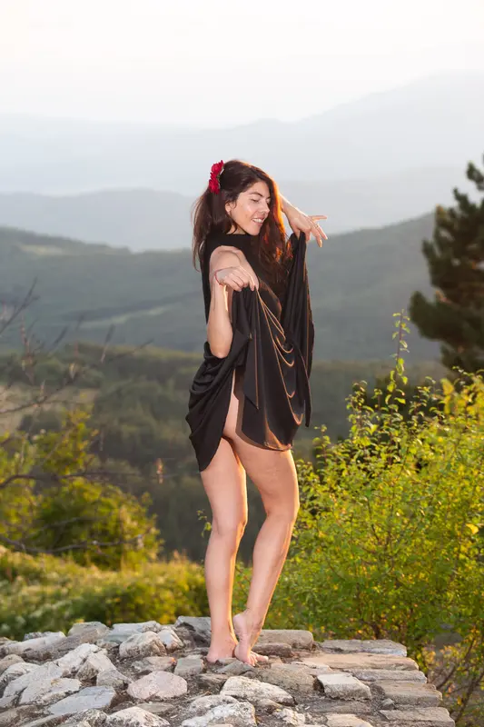
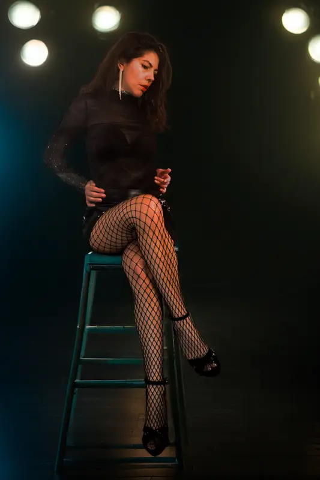
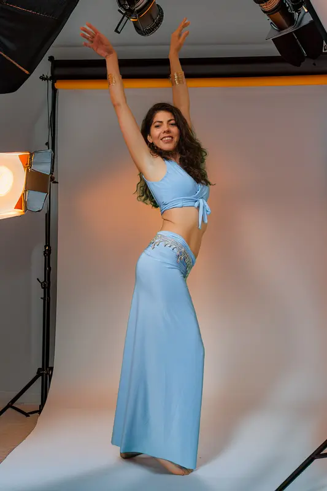
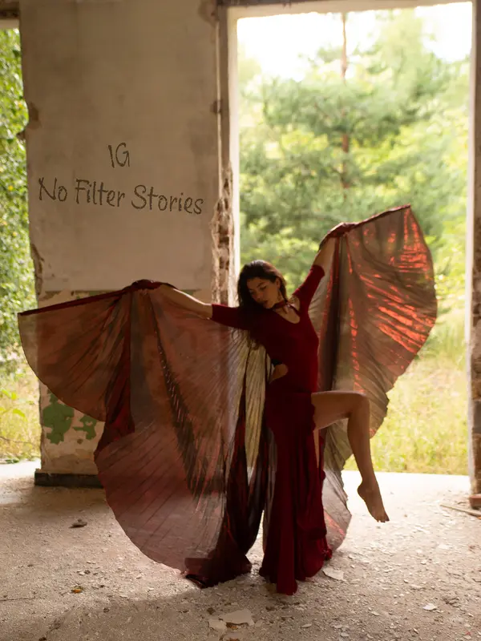
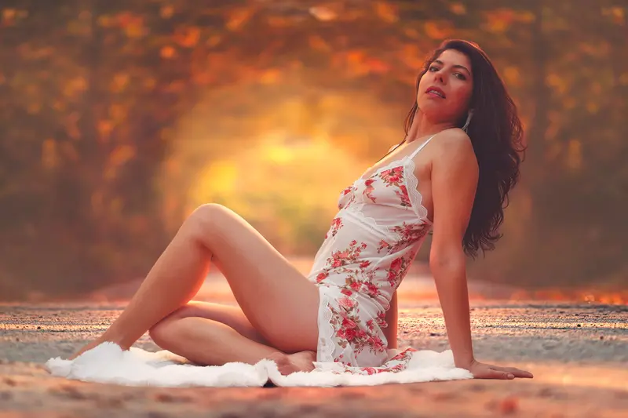
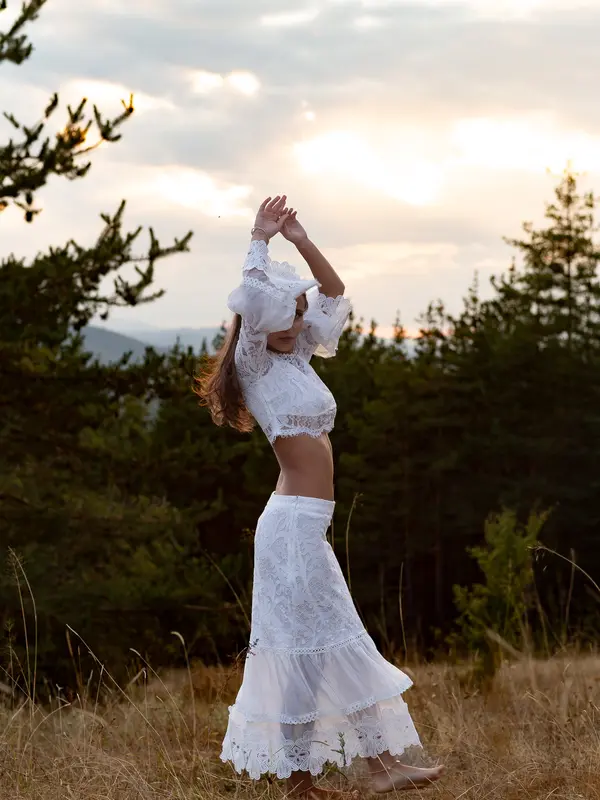
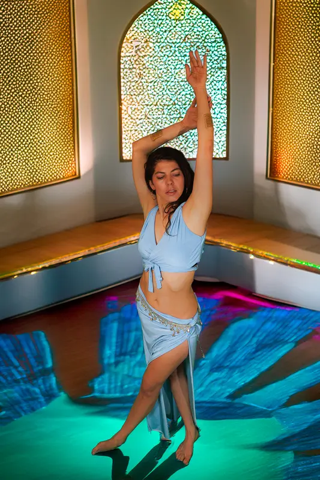
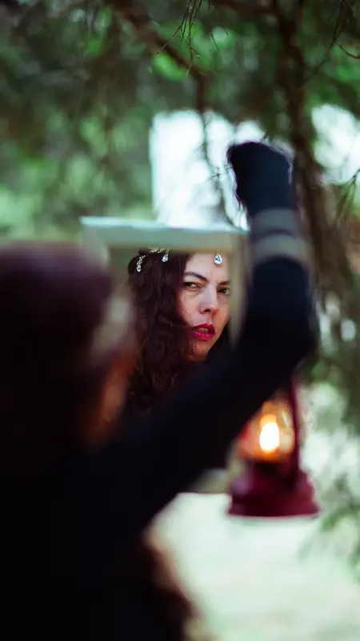
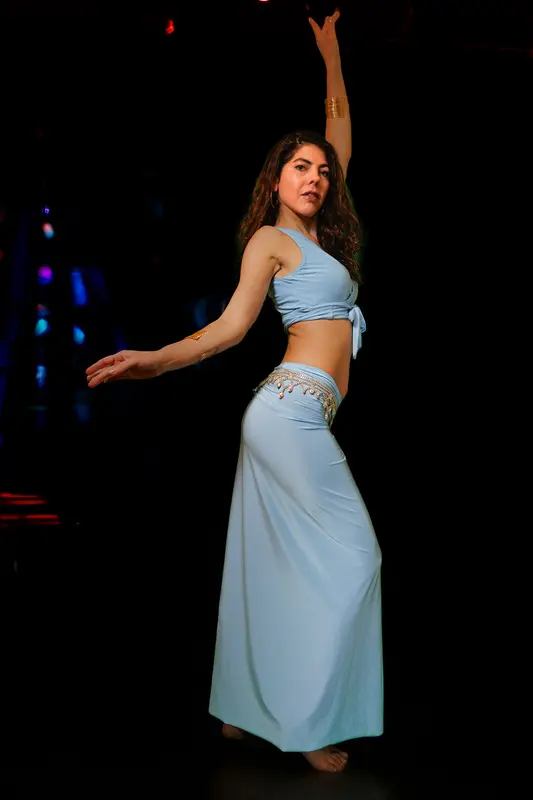
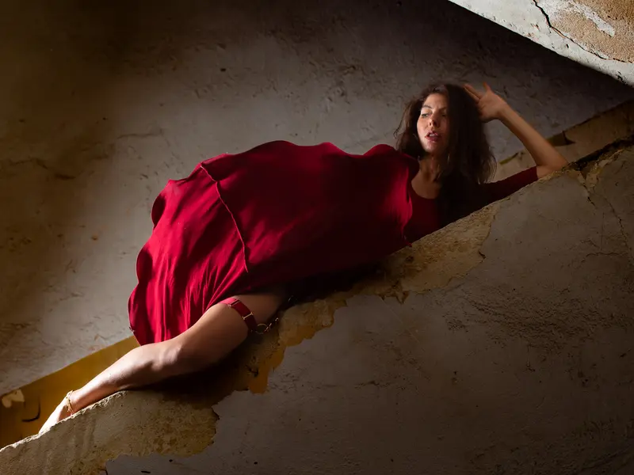

Colour
Dance, editorial and portrait photography in colour. Natural light, real locations, no filters.




























Dance, editorial and portrait photography in colour. Natural light, real locations, no filters.









